Onze Black Friday Deals staan nu online! Bekijk ze hier samen met alle overige sales!
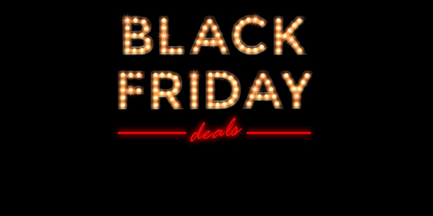- Games 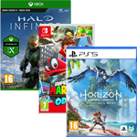
- Controllers 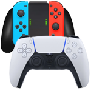
- Accessoires 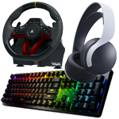
- Pre-paid cards 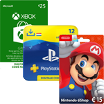
- Spelcomputers 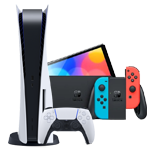
- Merchandise 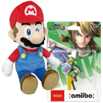
- Trading Cards 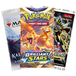
- Energy 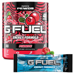
- Game Kleding 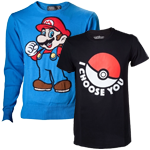
- Retro Gaming 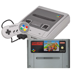
- Aanbiedingen 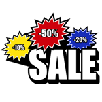
- Online Inruil
Nieuw binnen
Pas verschenen games, consoles en accessoires.
Toon alles
Pre-orders
Reserveer en ontvang op release!
Toon allesOnze Black Friday Deals staan nu online! Bekijk ze hier samen met alle overige sales!